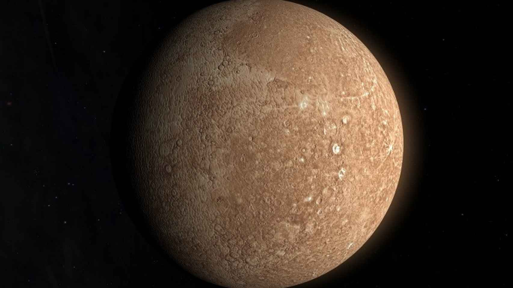
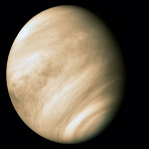

Planetas interiores
Índice
1.Mercurio
2.Venus
3.Tierra
4.Marte
Mercurio
Mercurio es uno de los cuatro planetas rocosos o sólidos; es decir, tiene un cuerpo rocoso, como la Tierra. Este planeta es el más pequeño de los cuatro, con un diámetro de 4879 km en el ecuador. Mercurio está formado aproximadamente por un 70 % de elementos metálicos y un 30 % de silicatos.
La densidad de este planeta es la segunda más alta de todo el sistema solar, siendo su valor de 5430 kg/m³, solo un poco menor que la densidad de la Tierra. La densidad de Mercurio se puede usar para deducir los detalles de su estructura interna. Mientras la alta densidad de la Tierra se explica considerablemente por la compresión gravitacional, Mercurio es mucho más pequeño y sus regiones interiores no están tan comprimidas. Por tanto, para explicar esta gran densidad, el núcleo debe ocupar gran parte del planeta y además ser rico en hierro, material que es altamente denso.

Venus
Se trata de un planeta interior de tipo rocoso y terrestre, llamado con frecuencia el planeta hermano de la Tierra, ya que ambos son similares en cuanto a tamaño, masa y composición, aunque totalmente diferentes en cuestiones térmicas y atmosféricas (la temperatura media de Venus es de 463,85 °C).
Su órbita es una elipse con una excentricidad de menos del 1 %, formando la órbita más circular de todos los planetas; apenas supera la de Neptuno. Su presión atmosférica es 90 veces superior a la terrestre; es, por lo tanto, la mayor presión atmosférica de todos los planetas rocosos del sistema solar. Es de color amarillento debido a su atmósfera, que está compuesta en su mayoría por dióxido de carbono (CO2), ácido sulfhídrico (H2S) y nitrógeno (N2).

Tierra
La Tierra se formó hace aproximadamente 4550 millones de años y la vida surgió unos mil millones de años después. Es el hogar de millones de especies, incluidos los seres humanos y actualmente el único cuerpo astronómico donde se conoce la existencia de vida.
La atmósfera y otras condiciones abióticas han sido alteradas significativamente por la biosfera del planeta, favoreciendo la proliferación de organismos aerobios, así como la formación de una capa de ozono que junto con el campo magnético terrestre bloquean la radiación solar dañina, permitiendo así la vida en la.
Las propiedades físicas de la Tierra, la historia geológica y su órbita han permitido que la vida siga existiendo. Se estima que el planeta seguirá siendo capaz de sustentar vida durante otros 500 millones de años,2ya que según las previsiones actuales, pasado ese tiempo la creciente luminosidad del Sol terminará causando la extinción de la biosfera.

Marte
El periodo de rotación y los ciclos estacionales son similares a los de la Tierra, ya que la inclinación es lo que genera las estaciones. Marte alberga el Monte Olimpo, la montaña y el volcán más grande y alto conocido en el sistema solar, y los Valles Marineris, uno de los mayores cañones del sistema solar. La llana cuenca Boreal en el hemisferio norte cubre el 40% del planeta y puede ser característica de un gigantesco impacto. Aunque en apariencia podría parecer un planeta muerto, no lo es. Sus campos de dunas siguen siendo mecidos por el viento marciano, sus casquetes polares cambian con las estaciones e incluso parece que hay algunos pequeños flujos estacionales de agua.
Las investigaciones en curso evalúan su habitabilidad potencial en el pasado, así como la posibilidad de existencia actual de vida. Se planean futuras investigaciones astrobiológicas, entre ellas la Mars 2020 de la NASA y la ExoMars de la ESA. El agua en estado líquido no puede existir en la superficie de Marte debido a su baja presión atmosférica, que es unas 100 veces inferior a la de la Tierra, excepto en las zonas menos elevadas durante cortos periodos de tiempo

Referencia: wikipedia